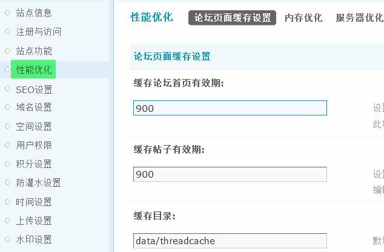
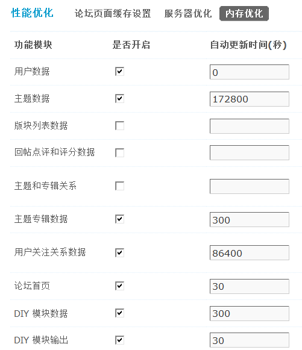

性能优化
性能优化包括论坛页面缓存设置、内存优化和服务器优化。
一、论坛页面缓存设置
设置页面缓存能够有效的降低服务器的 Mysql 与 CPU 负载，提高站点运行速度。建议在站点的数据量和访问量都比较大的情况下开启该功能。
1、论坛页面缓存设置
1)缓存论坛首页有效期：设置论坛首页缓存更新的时间，单位为秒，0 为关闭(此处关闭以后，缓存系数将不再起作用)，建议设置为 900。如果设置为 900 则论坛每 900 秒来读取数据库信息更新一次首页缓存，保证缓存信息与实际信息的同步。同时该设置只对游客生效，也就是说开启该功能后只有游客浏览的页面是被缓存起来的页面。保证了会员浏览的首页数据是没被缓存的。
2)缓存帖子有效期：设置帖子页面缓存更新的时间，单位为秒，0 为关闭。请根据实际情况进行调整，建议设置为 900。另外，请通过编辑论坛来指定帖子页面缓存系数。
3)缓存目录：默认为 data/threadcache 目录，如果你需要将其指定为其他目录，请确定你指定的目录有可写权限。
2、缓存系数批量设置
该功能可以批量设置各个版块的帖子缓存系数，在开启了帖子缓存之后请指定这个值。
1)缓存系数：就是说帖子缓存的程度，页面缓存功能可以将会员经常访问的主题临时缓存起来，缓解大型论坛服务器压力。缓存阀值范围 0 - 100，建议设置为 40 ，0 为关闭。在磁盘空间允许的情况下，适当调高缓存系数，可以提高缓存效果。同时系数越高，占用的磁盘空间也就越大。
2)请选择要设置的论坛：选择将该系数应用到哪个版块之上，可以对部分版块或者全部版块设置。
二、服务器优化
服务器优化可以对站点的一些参数进行调整，从而均衡服务器的负载。
1)是否优化更新主题浏览量
延迟更新主题或者附件的浏览量，可明显降低访问量很大的站点的服务器负担，建议开启本功能。
2）查看数开启防刷新
建议选择“是”如果选择“否”，主题、空间、日志每访问一次，浏览量增1，会增大服务器压力。
3）附件下载量延迟更新
建议开启本功能，延迟更新附件的浏览量，可明显降低访问量很大的站点的服务器负担。
4)禁止浏览器缓冲
禁止浏览器对论坛页面进行缓冲，可用于解决极个别浏览器内容刷新不正常的问题。如登陆后提示成功的用户名不是自己的用户名，但是刷新页面后正常。注意： 本功能会加重服务器负担。
5)最大在线人数
请设置合理的数值，范围 10～65535，建议设置为平均在线人数的 10 倍左右。这个设置通过设置 sessions 表的最大记录，来控制最大的在线人数，通过这个选项可以适当的控制服务器的资源消耗。可以根据实际在线人数来调节这个设置。
6)在线保持时间(分钟)
请根据访问情况设置合理的数值，访问量大的站点应当调小该数值，设置范围 5 - 60，过大或者过小的设置都有可能会增大服务器资源开销。用户的在线状态保存在 sessions 数据表内，调整这个值也就是调整了用户在线记录在该表内保存至自动销毁的时间。
7)JS 文件目录
设置站点 JS 文件的目录。当脚本目录为缓存目录时，系统会将默认目录中的 *.js 文件进行压缩然后保存到缓存目录以提高读取速度
8）开启图片延时加载
建议开启本功能，当开启后，页面中的图片在浏览器的当前窗口时再加载，可明显降低访问量很大的站点的服务器负担。
9）参与模块聚合数据条数
此值影响模块聚合时MYSQL检索数据的条数，设置太大将严重影响MYSQL的性能，设置太小将会影响模块聚合结果数据的理想程度。最大值为65535
10）模块更新时间区间
设置全部模块在指定的时间区间内更新。可以根据网站的访问情况，避开访问高峰时间段。如：0点-23点
11）是否关闭session机制
关闭session机制以后，可明显降低站点的服务器负担，建议在线用户数超过2万时开启本功能（注意：游客数和用户的在线时长将不再进行统计，论坛首页和版块列表页面的在线用户列表功能将不可用）
三、内存优化
目前支持的内存优化接口有 Memcache、eAccelerator、Alternative PHP Cache(APC)、Xcache、Redis 五种，优化系统将会依据当前服务器环境依次选用接口。
启用内存优化功能将会大幅度提升程序性能和服务器的负载能力，内存优化功能需要服务器系统以及PHP扩展模块支持。
内存接口的主要设置位于 config_global.php 当中，您可以通过编辑 config_global.php 进行高级设置。
内存优化功能设置：
用户数据：推荐开启，时间设置为0，永不过期，UID为单位，表数据更新时缓存数据会同步更新。
主题数据：推荐开启，时间设置为172800秒，两天，TID为单位，表数据更新时缓存数据会同步更新。
版块列表数据：推荐开启，时间设置为300秒，5分钟，FID为单位，第一页数据缓存，缓存时间内数据不更新。
回帖点评和评分数据：推荐开启，时间设置为300秒，5分钟，PID为单位，缓存时间内数据不更新。
主题和专辑关系：推荐开启，时间设置为300秒，5分钟，TID为单位，此TID的专辑集合，缓存时间内数据不更新。
主题专辑数据：推荐开启，时间设置为300秒，5分钟，TID为单位，此TID的专辑集合，缓存时间内数据不更新。
用户关注关系数据：推荐开启，时间设置为86400秒，一天，UID为单位，此UID关注用户的关系数据，缓存时间内数据不更新。
论坛首页：推荐开启，时间设置为30秒，用户组ID或’for_robot’为单位，缓存时间内数据不更新。
DIY 模块数据：推荐开启，时间设置为300秒，5分钟，模块ID为单位，缓存时间内数据不更新。
DIY 模块输出：推荐开启，时间设置为30秒，模块ID为单位，缓存时间内数据不更新。